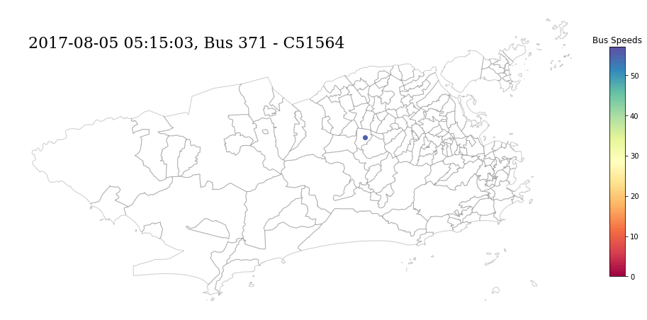

Pedro H. Chaves Maia
Ph.D. candidate in Economics, FGV/EPGE
Research
Work in Progress
The Commuting Costs of High Intensity Rains: Evidence from Rio de Janeiro
(Presented at the IGC-WB-GWU Young Urban Economist Workshop and at the 12th EMUEA )
Abstract: How do small-scale natural events affect city life? In this paper, I examine the impacts of recurrent high-intensity rains (HIRs) on the public transportation system of Rio de Janeiro, Brazil. I use a novel dataset composed of the city buses’ GPS information and public transport supply and demand data. I find that: 1) HIRs reduce bus average speeds by 1.03% to 7.30%, and 2) there is a substitution effect between buses and the rail system when the city undergoes a highly disruptive HIR. The estimated yearly wage opportunity cost of HIRs is between R$190.61 to R$279.04 million reais, which is equivalent to 1.01% and 1.72% of Rio’s total traffic-derived wage opportunity cost.
